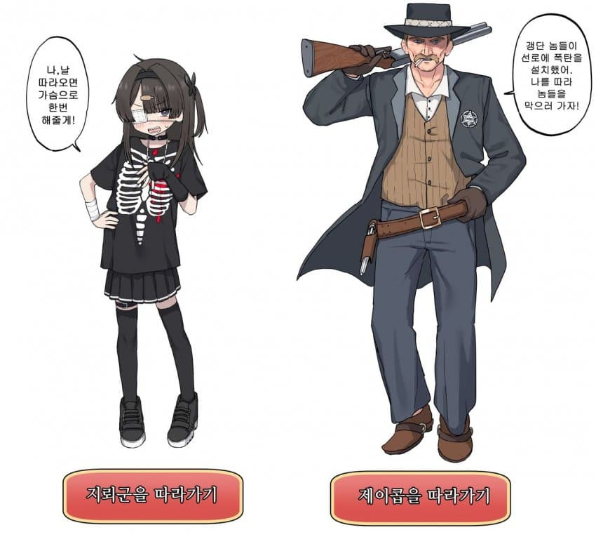
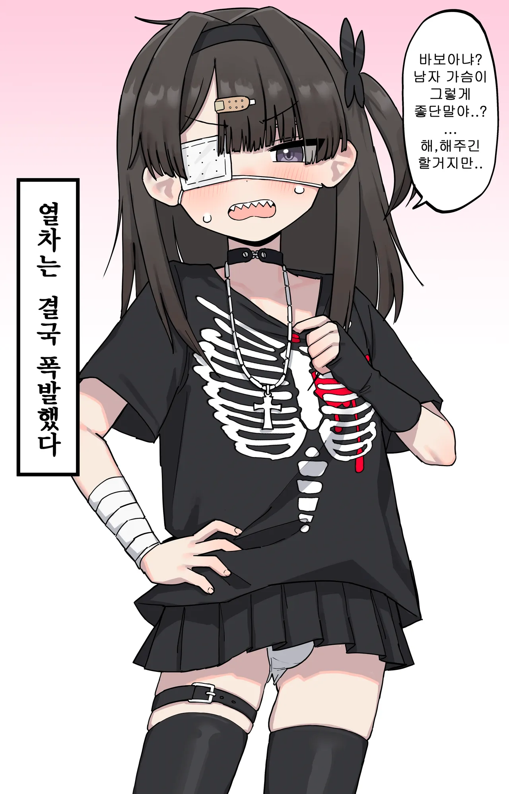

36 · 13 · 10 시간 전 · 원문


어흐흐
수집 당시 댓글 13개
고올든소르쟈76 · 12 시간 전
씨발 지뢰계가 아니라 "군" 이였네
스프링클 · 12 시간 전
↳ 답글 · Montmartre · 11 시간 전
메이플스토리 · 12 시간 전
AMD리싸쑤 · 12 시간 전
로그아웃 · 12 시간 전
AMUMU · 11 시간 전
랄부 · 11 시간 전
남고소년 · 11 시간 전
나같은게 가봤자 차이도 없을텐데 열차가 폭발했다? 실패, 즉 죽음 이었으니 보추가 날 살린것
마커스난네가좋다 · 11 시간 전
제이콥 당신은 좋은 사람이에요...
해으응 · 11 시간 전
이보추
칼리츠버그 · 10 시간 전
뫼에엥 · 2 시간 전
대꼴


씨발 지뢰계가 아니라 "군" 이였네